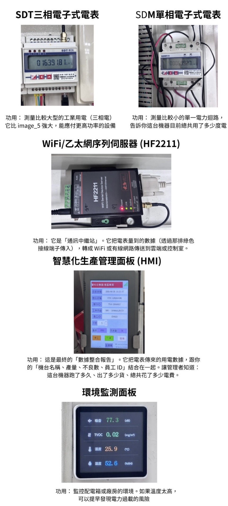

數據連結行動，透過 VR 實驗室預見減碳成果
我們發現智慧電表雖然擁有強大的數據基礎，但缺乏一個與使用者對話的橋樑。透過本系統，複雜的電力參數將轉化為直觀的視覺反饋。
應對國際供應鏈稽核，自動化能耗監控不再是選項，而是企業維持國際競爭力的「標配」。
傳統電表要等一個月後的帳單，智慧電表讓您即時看到「現在」用了多少電，精準抓出待機電力浪費。
發現辦公區印表機與飲水機在下班後依然消耗大量待機電力，透過加裝定時斷電，每月可輕鬆節省數千元無效電費。
精準計算工廠尖峰與離峰時段的電力費用，協助管理者將高耗電排程轉移至離峰時段，有效降低整體營運成本。
將高耗能的烘烤爐排程移至半夜的離峰時段運作，避開尖峰高昂費率，工廠單月電費支出成功降低了 20% 以上。
具備強大的擴充整合能力，可與冷氣空調、溫度計、環境檢測器等設備連動，實現自動化的能源與環境管理。
當環境感測器偵測到溫度超過 28 度且有人員在場時，系統自動啟動冷氣並鎖定於適當溫度，達到節能與舒適雙贏。
直接乘以當年「電力排碳係數」，算出每一小時、每一天產生了多少碳排放。
月底一鍵產出報表，系統自動將本月耗電量換算為約 4.95 噸碳排放 (CO2e)，可直接作為企業 ESG 綠色報告數據。
單獨知道冷氣、照明、電腦設備各別用了多少電，而非只有總表的模糊數字。
打破「總電費很貴但不知哪裡貴」的盲點，精確揪出「廠房 B 的舊型空調系統」佔了總用電 40%，以進行針對性汰換。
監控功率因數 (PF)。若 PF 低於標準時系統自動發出預警通知，提醒工程師檢修，避免因此被加收無效電力費用。
碳盤查是指企業針對營運活動產生的溫室氣體（GHG）進行清查與計算。通常依照 ISO 14064-1 分為：
一套完整的智慧能源監控系統，是由多個關鍵硬體依序組合而成。以下將依據資料的流動順序，為您解析各個元件所扮演的角色：

這是一家已經全面導入「智慧電表」的現代化公司。您的任務是：
可以的。 傳統人工抄表容易出錯且具爭議，智慧電表提供的是自動化、不可竄改的實時數據。系統可一鍵產出各部門統計報表，是應對 Apple, Google 等大廠供應鏈稽核時最高效的數位佐證資料。
EMS 提供的能源活動數據可作為碳盤查的重要數據來源，但正式碳排資料通常仍需透過 CMS 碳管理系統進一步進行排放源分類、碳排計算與報表整理。實際政府申報或查核作業，也通常會搭配第三方顧問或查證單位進行確認，以確保資料符合相關規範。
對於製造業工廠端，透過 EMS 可以即時監測各廠區、設備與產線的用電狀況，協助找出高耗能設備、待機耗能與異常用電情況，協助企業進一步做節能改善與用電最佳化。除了節能直接帶來的減碳效益外，能源數據採集的細化與自動化，也能大幅降低碳活動數據蒐集難度並提升數據可靠度。
它能充當機台的「健康檢查員」。當機台受損，電流常會出現異常波動。系統能捕捉微小變化並預警，讓你能在故障停機前先安排預防性維修，避免巨大停產損失。
沒問題。 支援 Modbus 或 API 標準介面。數據可同步串接至您現有的戰情室看板，讓你不用換視窗，就能在同一個螢幕上看見生產進度與即時能耗。
可以，智慧電表會依實際安裝場域，在 EMS 系統中設定對應的設備或廠區歸屬，可透過設備、產線或廠區維度進行用電量比較與分析，並依數據回傳時間彙整出尖峰、半尖峰與離峰時段的耗電情況。
透過平均 5-15% 的能耗節省，通常在 1.5 至 3 年內即可回收成本。
為盡量減少對原有廠房線路的干預，目前方案主要採用 WIFI通訊，先對工廠端的網路與通訊基礎設施進行評估，必要時增設通訊設備或者是評估改走有線的通訊方式例如RS485 。
目前方案規劃以硬體買斷、軟體訂閱方式為主，會依照客戶實際需求的廠區數量、監測點位以及 IoT 設備數量進行評估與報價，EMS系統則會依需求的模組內容提供對應報價。
因能源管理系統通常以數據趨勢分析與告警通知為主，較少有7*24的支援服務，目前系統可透過告警模組即時通知客戶異常狀況，並提供遠端協助進行問題排查。若客戶有特殊需求，也可再依專案規劃對應的支援方式。